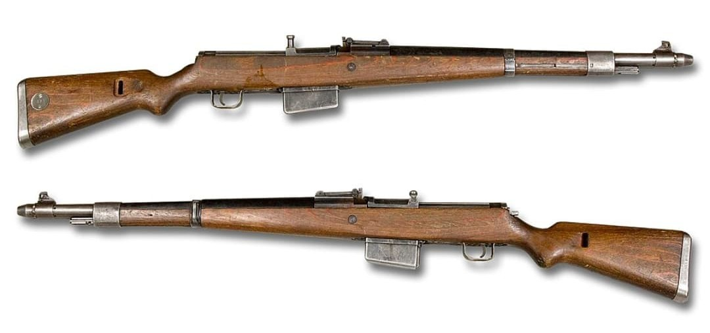
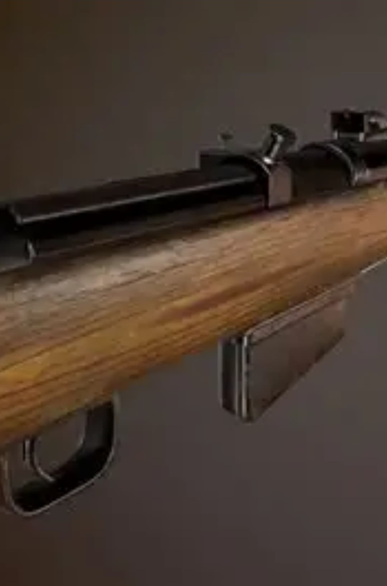
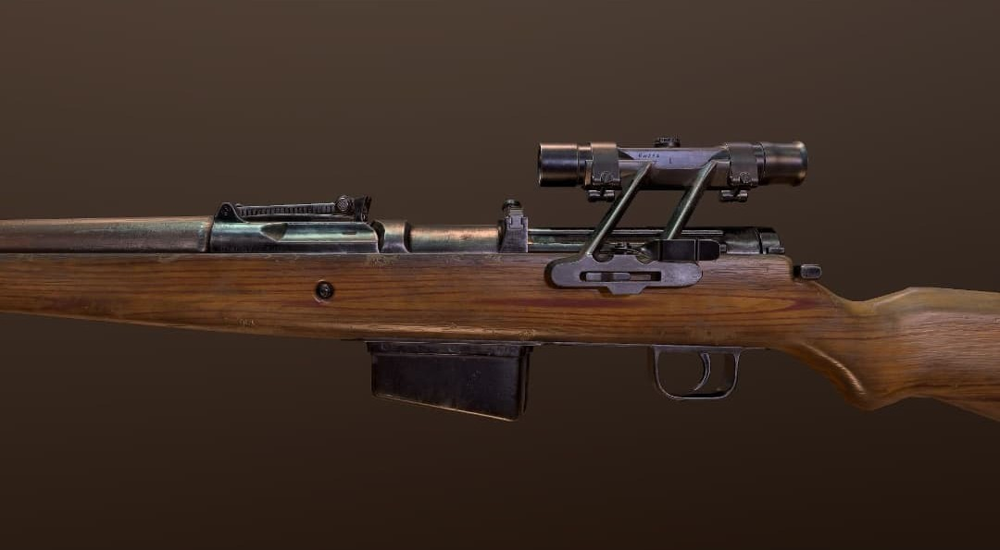
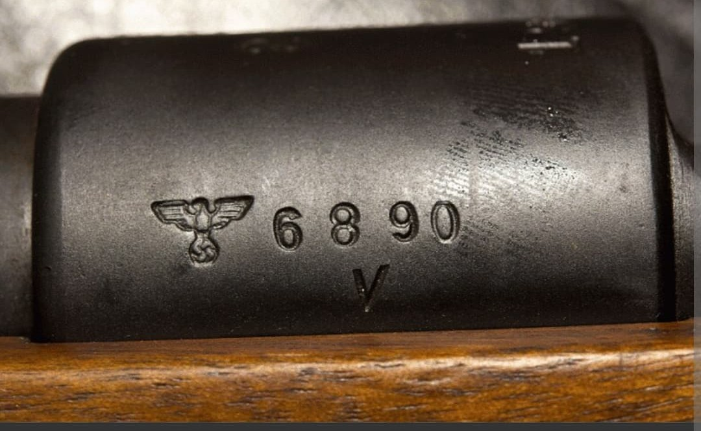

Le Gewehr 41 (G41) est un fusil semi-automatique allemand développé pour remplacer le Karabiner 98k comme arme principale de l’infanterie. Conçu au début de la Seconde Guerre mondiale, il existe en deux versions : le G41(M) (Mauser) et le G41(W) (Walther).
Malgré des performances correctes, son système de récupération des gaz s’avère complexe et peu fiable, ce qui conduit rapidement à son évolution : le célèbre Gewehr 43.
Le G41 est un fusil semi-automatique chambré en 7,92×57 mm Mauser. Il conserve un magasin interne de 10 coups, alimenté par lames-chargeurs ou par un clip spécifique selon les versions.
Le modèle Walther (G41(W)) est le plus répandu, plus fiable et plus simple que le modèle Mauser (G41(M)).

Le G41(M) est la version produite par Mauser. Il respecte strictement les exigences initiales de l’armée allemande, notamment l’interdiction d’utiliser un trou dans le canon pour la prise de gaz. Résultat : un système complexe, lourd et peu fiable.
Le G41(W), produit par Walther, simplifie la mécanique et améliore la fiabilité. C’est cette version qui sera adoptée en plus grand nombre et servira de base au futur Gewehr 43.


Les marquages du G41 indiquent le fabricant (Mauser ou Walther), l’année de production et divers poinçons militaires. Les modèles Walther sont généralement plus recherchés en raison de leur fiabilité supérieure.
